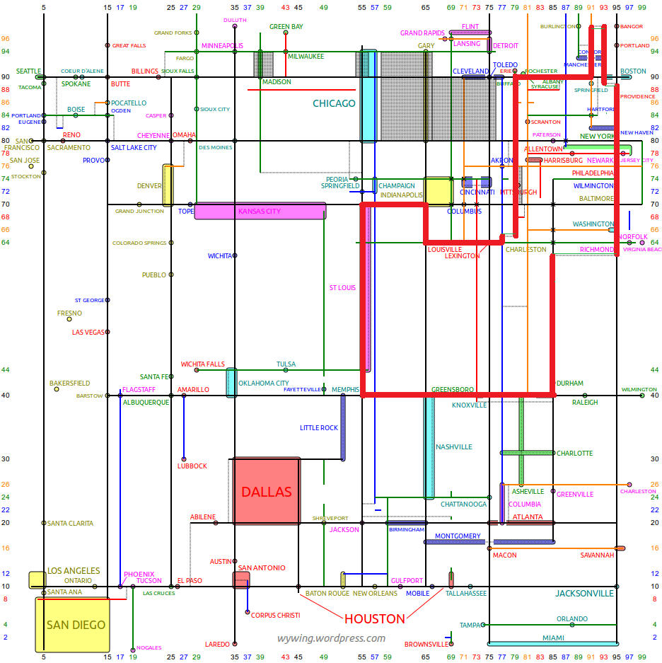

Solution: Interstate Commerce
Answer: TRILLIONAIRE
Written by Lewis Chen
At the beginning, we are presented with quite a few numbers. There are ultimately two themes to this puzzle:
The first line contains a list of interstate numbers. This is hinted by the title, as well as the flavor (“travel the roads”) and the general two-digitness of the interstates, with the three-digit numbers being plausible auxiliary interstate numbers. Based on the initial “Trip:”, as well as the general location of these interstates, it suggests that we may want to traverse these roads in a single path. (As it turns out, the path ends up being a near loop and could conceivably start and end near Erie, PA.)
The second theme is Monopoly, as hinted also by the title (the Interstate Commerce Act was a piece of legislation to counter monopolistic behavior), the flavortext (“build your business empire” describing what you vaguely do in Monopoly (and if you wanted to build a real-life monopoly)), as well as “get rolling” as an action that you take every turn in Monopoly (or more generally many board games) - this also clues at the extraction. Furthermore, the colors that some of the second line numbers have been highlighted are also reminiscent of some of the Monopoly colors.
A thing that the Monopoly board (US edition) has is a lot of are streets named after states. This suggests that we may want to consider the states that we travel while on our road trip. The uncolored squares represent states that are not on the Monopoly board.
This can be done in the following manner:
- Start at I-79 near the I-90 intersection, Erie, PA. States traveled: PA
- I-79 ends and merges into I-77 slightly north of Charleston, WV. States traveled: WV
- I-77 ends shortly after at I-64 at Charleston, WV; we need to head west to hit I-65.
- Exit north on I-65 at Louisville, KY. States traveled: KY
- Exit west on I-70 at Indianapolis, IN. States traveled: IN
- Exit south on I-55 at East St. Louis, IL. (There’s a small section where I-55 is cosigned with I-44 as well.) States traveled: IL
- Exit east on I-40 at West Memphis, AR. States traveled: MO, AR
- Exit north on I-85 at Hillsborough, NC. States traveled: TN, NC
- I-85 ends on I-95 at Petersburg, VA; head north. There is a small section of I-95 where it’s cosigned with the I-495 Capital Beltway - around 500 feet (150 m) of the beltway passes through Washington, DC, but DC is not a state and thus is not indicated in the puzzle. States traveled: VA
- You’ll need to make a brief detour onto I-76 east in Philadelphia, PA. States traveled: MD, DE, PA
- Travel east on I-295 (DE/NJ) near Camden, NJ. States traveled: NJ
- Then exit east on I-195 (NJ) near Trenton, NJ.
- Get back on I-95 north at Allentown, NJ.
- The next part is a little ambiguous, but this doesn’t affect the order of states you travel to. You can get on I-93 north either south of Boston, MA, or north of Boston. States traveled: NY, CT, RI, MA
- Exit west on I-89 near Concord, NH. States traveled: NH
- Exit south on I-91 at White River Junction, VT. States traveled: VT
- Exit west on I-90 at Springfield, MA. States traveled: MA
- Finally, let’s head back to near where we started, passing through New York. States traveled: NY
Finally, to extract, we consider the spaces that the state avenues are on the board, move forward (i.e. roll) the number of spaces indicated by the +number, and extract by taking the nth letter as indicated by the parenthetical number. This gives us TRILLIONAIRE, a fitting answer for a puzzle on Monopoly (and to some extent also the Interstate System which, surprisingly, a hypothetical trillionaire could actually finance in full).
| State | Roll | New Property | Letter |
|---|---|---|---|
| PA | +9 (4) | Baltic Ave. | T |
| WV | |||
| KY | +6 (7) | Ventnor Ave. | R |
| IN | +6 (5) | Marvin Gardens | I |
| IL | +2 (3) | Atlantic Ave. | L |
| MO | |||
| AR | |||
| TN | +6 (2) | Illinois Ave. | L |
| NC | +9 (4) | Mediterranean Ave. | I |
| VA | +5 (5) | New York Ave. | O |
| MD | |||
| DE | |||
| PA | +12 (5) | Oriental Ave. | N |
| NJ | |||
| NY | +4 (5) | Indiana Ave. | A |
| CT | +5 (5) | Virginia Ave. | I |
| RI | |||
| MA | |||
| NH | |||
| VT | +3 (6) | St. Charles Pl. | R |
| MA | |||
| NY | +2 (2) | Kentucky Ave. | E |
Author’s Notes
I initially had a nebulous idea of writing a puzzle on the interstate system, since its winding roads are pretty conducive to puzzling. (It does make the puzzle particularly American, however.) When I got assigned the answer “TRILLIONAIRE”, I tried to think of a way to tie this with my idea, and thought of Monopoly street names that were also states (and thus making the puzzle even more American). I also knew that they were all Eastern / Midwest states, so a fairly compact interstate path that goes through all of the states would be feasible.
I did want to go through every single state, although there were only 10 states, and 12 letters for the answer. I was able to justify duplicating two states in order to form a loop. (Although, as it turns out, you don’t actually need to pass through Pennsylvania twice, since there’s a narrow gap between Delaware and New Jersey that you can pass through.)
I also wanted to make a nod to Atlantic City, NJ for being the inspiration for Monopoly but unfortunately it was nowhere near the interstate system.
The fact that I-95 is still discontinuous resulted in the inelegance of leaving I-95 to take a slightly convoluted route of I-76, I-295, and finally I-195. (It turns out that without I-76, you can go from I-95 to I-295 without ever passing through Pennsylvania.) I would have ideally liked to go straight through I-95, but according to Wikipedia the two parts are not scheduled to be connected until later this year under the Pennsylvania Turnpike project.
Extraction is somewhat underwhelming, although it’s meant to be fairly straightforward as an intro round puzzle. It can also be somewhat easily circumvented - one testsolver group ended up doing a regex search on all possible letters each box could extract to and thus getting the answer - but I think it’s more fun and less technical to do it the “correct” way. The other option is still possible, at any rate.
Let me know if anyone decides to try this rather wacky road trip in real life! I can’t vouch for whether it’s an actually interesting path to take though.
Finally, an extra map for your enjoyment:

(credit to https://wywing.wordpress.com/2014/10/18/map-of-the-continental-us-scaled-by-interstate-number/ for making the base map)